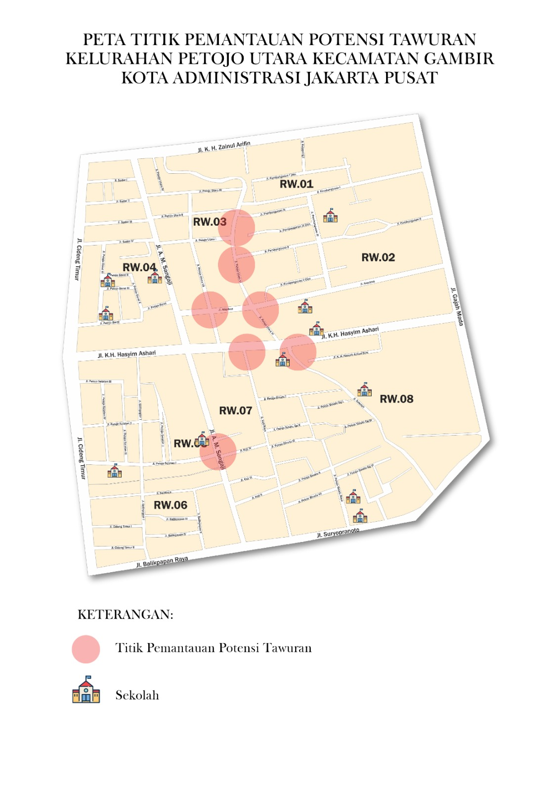
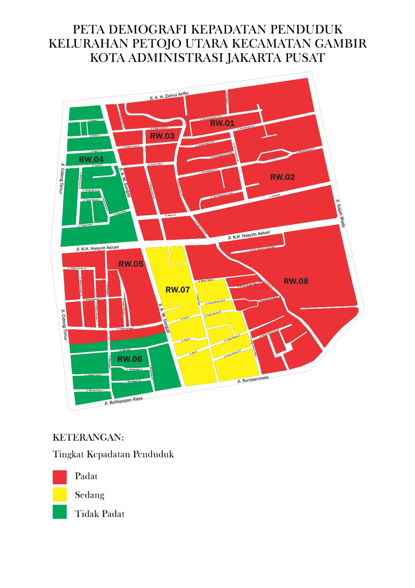
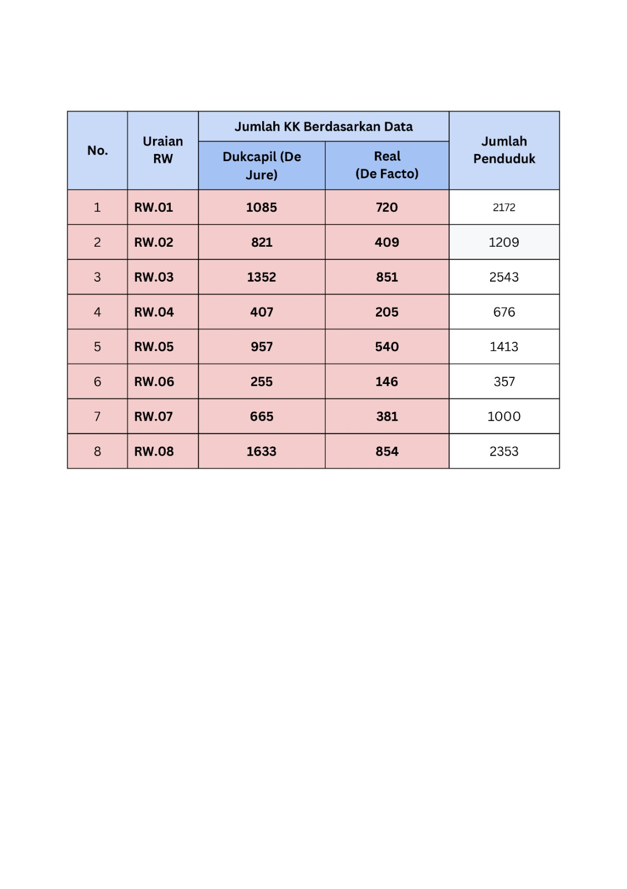

Selamat Datang, Pengurus FKDM
Kelurahan Petojo Utara • Gambir
Menu Utama FKDM
Pilih layananKelurahan Sunter Agung
Jl. Danau Sunter Utara Blok G, Tanjung Priok
Pimpinan Kelurahan
Visi
Terwujudnya Kelurahan Petojo Utara yang aman, tertib, tangguh terhadap potensi kerawanan sosial, dan melayani masyarakat secara prima.
Misi
- Meningkatkan deteksi dini & cegah dini bersama FKDM.
- Memperkuat sinergi Tiga Pilar & elemen warga.
- Digitalisasi informasi dan pelaporan wilayah.
Sejarah Singkat & Geografis
Kelurahan Petojo Utara merupakan kawasan strategis di Jakarta Pusat yang memadukan area permukiman padat, kawasan industri/perkantoran, dan ruang terbuka hijau Danau Sunter (6°08'22"LS 106°52'14"BT).
Batas Wilayah
- Utara: Kel. Papanggo & Tanjung Priok
- Selatan: Kel. Kemayoran & Sumur Batu
- Timur: Kel. Sunter Jaya
- Barat: Kel. Pademangan Timur
Media Sosial Resmi Kelurahan Petojo Utara


Peta Titik Pemantauan Potensi Tawuran Kelurahan Petojo Utara

Pemetaan titik rawan dan zona pemantauan potensi tawuran warga di Kelurahan Petojo Utara, Kecamatan Gambir, Jakarta Pusat.
Peta Demografi Kepadatan Penduduk Kelurahan Petojo Utara

Klasifikasi wilayah berdasarkan tingkat kepadatan penduduk (Padat, Sedang, Tidak Padat) per RW di Kelurahan Petojo Utara.
Tabel Jumlah KK dan Penduduk Berdasarkan RW

Rekapitulasi jumlah Kepala Keluarga (Dukcapil De Jure & Real De Facto) serta total jumlah penduduk per RW di Kelurahan Petojo Utara.